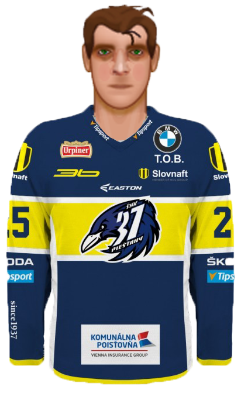

Novinky zo sveta turnaja
Štvrtý víkend je za nami
- 8. a 9.kolo sa odohralo vo štvrom hracom víkende. Žiaľ články z týchto kôl kvôli časovej tiesni nebudú. Tak vám aspoň prinášam menšie interview s ďalším manažérom a tým je PedroSK, ktorý hraje HA už 14 rokov. V článku sa dozvieme niečo málo o ambíciach jeho klubu HK Dukla Trenčín v turnaji. Ale pýtali sme sa aj na nadchádzajúce Play-off.
- Interview 🆕 /manažér PedroSK - HK Dukla Trenčín/
Tretí víkend je za nami
Druhý víkend je za nami
- Review 5.kolo - výsledky + článok
- Review 4.kolo - výsledky + článok
- Po 5.kole vám taktiež prinášam informácie zo zákulisia HC Košice a vyjadrenie ich manažéra tomsona k posledným zápasom ligy a aké zmeny HC Košice čakajú. Detvu počas víkendu oslabili zranenia hráčov a zápas medzi Spišskou a Martinom v 5.kole sa neodohral z technických príčin. Dohravka je naplánovaná na stredu 3.6.2020. Spišská tak stále môže útočiť na prvú priečku v tabuľke a zosadiť z nej Poprad. Ako dopadli jednotlivé kolá sa dočítate v sekcii novinky - #.kolo. Odkaz na rozhovor nájdete tu:
Prvý víkend je za nami
- Review 3.kolo - výsledky + článok
- Review 2.kolo - výsledky + článok
- Review 1.kolo - výsledky + článok
| Kolo | Hráč kola | B | |
|---|---|---|---|
| 1. | Kliment Geffert | 4 | |
| 2. | Martin Jones | 2 | |
| 3. | Kliment Geffert | 3 | |
| 4. | Colin Webber | 3 | |
| 5. | Lari Suorsa | 3 | |
| 6. | Herman Lohmus | 4 | |
| 7. | Radúz Rišňovský | 3 | |
| 8. | Krišjānis Videnieks | 4 | |
| 9. | Derek Syed | 3 |
| Najproduktívnejší hráč | turnaja | |
|---|---|---|
|  | ||
| Body | Góly | Asistencie |
| 15 | 10 | 5 |
| Hráč kola |